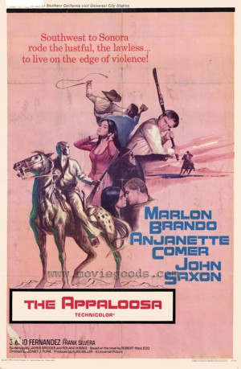

#2765 Südwest nach Sonora
Alternativ: The Appaloosa
 
 IMDB-Wertung: 6.3 / 10
IMDB-Wertung: 6.3 / 10  Metascore: 0
Metascore: 0 
Der Herumtreiber Matt will sesshaft werden und sein Glück als Pferdezüchter versuchen. Dummerweise hat der Mexikaner Chuy ein Auge auf seinen prachtvollen Appaloosa-Vollbluthengst geworfen. Matt will das Tier nicht verkaufen, aber der Pistolero gehört nicht zu den Männern, die ein Nein akzeptieren.
Jahr: 1966
Dauer: 98 Minuten
FSK: 12
Land: USA Studio: Universal PicturesTonspuren:
Untertitel:
Auflösung: 1080p (1920x816) Größe: 8960 MB
Genre: Western
Regisseur: Sidney J. Furie
Drehbuch: James Bridges, Roland Kibbee, Robert MacLeod
Soundtrack: Frank Skinner
Darsteller:
Datei: X:\HD-Western-1960-1979\Südwest nach Sonora (1966, FSK12, 1920x816).mkv seit 14.12.2015
Festplatte: HD Eastern+Western
 Es gibt insgesamt 110 Filme in der Gruppe 'HD-Western-1960-1979'
Es gibt insgesamt 110 Filme in der Gruppe 'HD-Western-1960-1979'